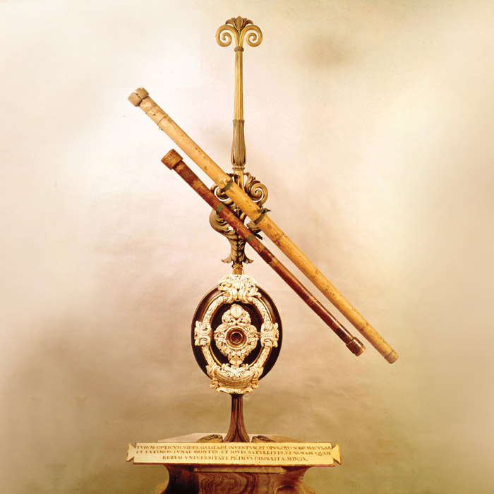

Гигорчук Данііл Дмитрович
Видатні вітчизняні та закордонні вчені-фізики.

Галілео Галілей

Галілео Галілей – вважається засновником не лише експериментальної, але значною мірою і теоретичної фізики. Він є основоположником експериментально-математичного методу вивчення природи. Саме від нього бере початок фізика як наука. Найважливішим вкладом Галілео Галілея в науку була свідома й послідовна заміна пасивного спостереження активним експериментом. Результатами цих експериментів стали зроблені ученим наукові відкриття.
Телескоп

Телескоп — 25 серпня 1609 року Галілео Галілей продемонстрував Великій раді і дожу Венеції новий пристрій — телескоп, який складався з двох лінз і давав трикратне збільшення. Удосконаливши свій пристрій, у січні наступного року телескоп Галілея міг збільшувати до 33 разів, що дозволило йому відкрити супутники Юпітера, кратери на Місяці і виявити, що Чумацький шлях складається з безлічі зірок.
Сelatone
.jpg)
Целатон оптичний прилад, який винайшов Галілео Галілей для визначення географічної довготи під час морських подорожей на основі спостереження за супутниками Юпітера .